.static-code {
background-color: white;
border: 1px solid lightgray;
}
.simulated {
background-color: #EEF8FB;
border: 1px solid #287C94;
}
library(pcvr)
library(data.table) # for fread
library(ggplot2)
library(patchwork) # for easy ggplot manipulation/combinationExample Bellwether (Lemnatech) Workflow
The Bellwether phenotyping facility at the Donald Danforth Plant Science Center allows for high throughput image based phenotyping of up to 1140 plants over the course of several weeks. This generates a massive amount of image data which is typically analysed using plantCV, a python based image analysis tool developed and maintained by the Data Science Core Facility at DDPSC. The plantCV output from a Bellwether experiment consists of numeric phenotypes commonly broken into two categories, single value traits and multi value traits. Single value traits are phenotypes where one image yields one value, things like plant height or plant area. Multi value traits require multiple numbers to describe a single image and currently are limited to color histograms in various color spaces. Here we will focus only on the hue channel of HSV color, but there are lots of options with your data. This package is being developed to help with common analysis tasks that arise in using plantCV output. If your goal or experiment seems to be unsupported then please consider raising an issue on github so we can know what directions to take development in for the future.
Installation of pcvr from github is possible with the
remotes or devtools packages. You may need to
restart R after installing or reinstalling packages.
If you clone that repository and are making edits then you can easily
use your local version with:
devtools::load_all("file/path/to/local/pcvr")
Functions in pcvr use colorblind friendly palettes from
the viridis package if they specify color/fill scales. Some
functions do not specify a color/fill scale and use ggplot2
defaults. If you use these functions or base work off of them please be
mindful of your choices regarding color.
As a final note before starting into pcvr, this vignette
is laid out to help guide analyses from Bellwether experiments these
functions tend to be generalizable and can be used for other plantCV
data as well. There are some code chunks in this vignette that you are
only presented to demonstrate syntax and that you are not meant to run
locally if following along. Those are identified by style:
complicatedFunction("syntax") # do not run this style
1 + 1 # run this style## [1] 2
support <- seq(0, 1, 0.0001) # this style is simulated data
plot(support, dbeta(support, 5, 5), type = "l", main = "simulated example")Load Data
In this vignette we will use simulated data but there are examples on
github using
PlantCV output read from online if you run into metadata
handling problems. This simulated data picks up roughly where the
Reading pcv data article ends.
set.seed(123)
d <- growthSim("logistic",
n = 30, t = 25,
params = list(
"A" = c(140, 155, 150, 165, 180, 190, 175, 185, 200, 220, 210, 205),
"B" = c(13, 11, 12, 11, 10, 11, 12, 13, 14, 12, 12, 13),
"C" = c(3, 3.25, 3.5, 3.1, 2.9, 3.4, 3.75, 2.9, 3, 3.1, 3.25, 3.3)
)
)
d$genotype <- ifelse(d$group %in% letters[1:3], "MM",
ifelse(d$group %in% letters[4:6], "B73",
ifelse(d$group %in% letters[7:9], "Mo17", "W605S")
)
)
d$fertilizer <- ifelse(d$group %in% letters[seq(1, 12, 3)], 0,
ifelse(d$group %in% letters[seq(2, 12, 3)], 50, 100)
)
colnames(d)[c(1, 3, 4)] <- c("barcode", "DAS", "area_cm2")
d$height_cm <- growthSim("monomolecular",
n = 30, t = 25,
params = list(
"A" = c(
25, 30, 35, 32, 34, 30,
37, 36, 34, 33, 35, 38
),
"B" = c(
0.12, 0.08, 0.1, 0.11, 0.1,
0.12, 0.07, 0.12, 0.11, 0.09, 0.08, 0.09
)
)
)$y
d$width_cm <- growthSim("power law",
n = 30, t = 25,
params = list(
"A" = c(
10, 14, 13, 11, 12, 13,
10, 13, 14, 11, 14, 14
),
"B" = c(
1.05, 1.13, 1.17, 1.01, 1.2,
1, 1.04, 1.07, 1.17, 1.04, 1.16, 1.17
)
)
)$y
d$hue_circular_mean_degrees <- growthSim("linear",
n = 30, t = 25,
params = list("A" = c(runif(12, 1, 3)))
)$y +
round(runif(nrow(d), 50, 60))
sv_ag <- dFREM
Now that our data is read in and has undergone some basic quality
control we want to know which phenotypes are best explained by our
design variables. The frem function partitions variance
using a fully random effects model (frem). Here we provide our
dataframe, the design variables, the phenotypes, and the column
representing time. By default frem will use the last
timepoint, but this is controlled with the time argument.
For this first example we mark the singular model fits
(markSingular=TRUE) to indicate places where
lme4::lmer had some convergence issues. Generally these
issues are minor and do not cause problems for interpreting these
models, but you can pass additional arguments to lme4::lmer
through additional arguments if desired.
frem(sv_ag,
des = c("genotype", "fertilizer"),
phenotypes = c("area_cm2", "height_cm", "width_cm", "hue_circular_mean_degrees"),
timeCol = "DAS", cor = TRUE, returnData = FALSE, combine = FALSE, markSingular = TRUE, time = NULL
)## [[1]]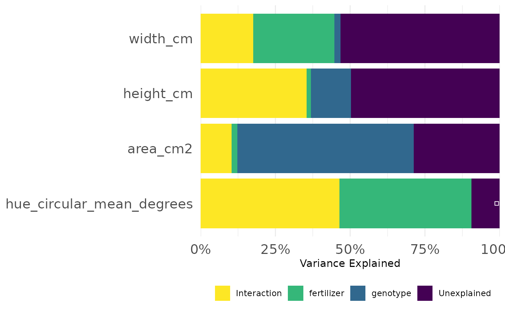
##
## [[2]]Here we look at how much variance in each phenotype was explained
over the course of the experiment. We could also specify a set of times
(time = c(10:14) for example) if we are most interested in
a particular timeframe.
frem(sv_ag,
des = c("genotype", "fertilizer"),
phenotypes = c("area_cm2", "height_cm", "width_cm"),
timeCol = "DAS", cor = FALSE, returnData = FALSE, combine = FALSE, markSingular = FALSE, time = "all"
)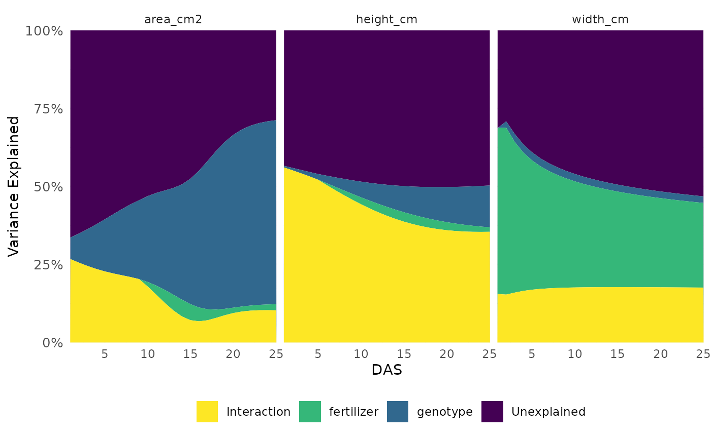
This informs our next steps. Hue and size based phenotypes are well explained by our design variables so we might decide to focus more complex analyses on those. In this experiment mini maize is one of the genotypes and the fertilizer treatment has an option with no nitrogen, so this intuitively makes sense and passes an eye check.
Single Value Traits
Most analysis focus on single value traits, that is phenotypes where one object in an image returns on numeric value such as area or height. These can be compared longitudinally or with respect to individual days. Note that we do not recommend using a PCA of the single value traits to look for differences in your treatment groups, these traits are interpretable on their own and are interdependent enough that a PCA is not appropriate.
Growth Trendlines
Trendlines help us decide what next steps make the most sense and give a general impression of which conditions yielded healthier plants.
ggplot(sv_ag, aes(
x = DAS, y = area_cm2, group = interaction(genotype, fertilizer, lex.order = TRUE),
color = genotype
)) +
facet_wrap(~ factor(fertilizer, levels = c("0", "50", "100"))) +
geom_line(aes(group = interaction(barcode, genotype)), linewidth = 0.1) +
geom_smooth(method = "loess", se = TRUE, fill = "gray90", linewidth = 1, linetype = 5) +
labs(
y = expression("Area" ~ "(cm"^2 ~ ")"),
color = "Genotype"
) +
guides(color = guide_legend(override.aes = list(linewidth = 5))) +
pcv_theme() +
theme(axis.text.x.bottom = element_text(angle = 0))## `geom_smooth()` using formula = 'y ~ x'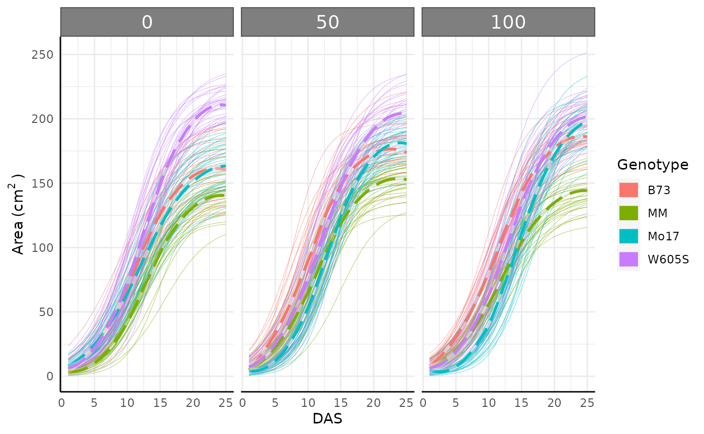
Single day comparisons
Non-longitudinal data (or single day data from larger longitudinal
data) can be compared using the conjugate function.
conjugate uses conjugate priors to make simple Bayesian
comparisons for several types of data. Optionally, region of practical
equivalence (ROPE) testing is also supported. Most distributions
supported by this function can be used with either wide or long single
value data or wide multi-value data. See ?pcvr::conjugate
or the conjugate
tutorial for details on usage and available options.
mo17_area <- sv_ag[sv_ag$genotype == "Mo17" & sv_ag$DAS > 18 & sv_ag$fertilizer == 100, "area_cm2"]
b73_area <- sv_ag[sv_ag$genotype == "B73" & sv_ag$DAS > 18 & sv_ag$fertilizer == 100, "area_cm2"]
area_res_t <- conjugate(s1 = mo17_area, s2 = b73_area, method = "t", rope_range = c(-5, 5))
area_res_t## Normal distributed Mu parameter of T distributed data.
##
## Sample 1 Prior Normal(mu = 0, sd = 10)
## Posterior Normal(mu = 180.856, sd = 1.38)
## Sample 2 Prior Normal(mu = 0, sd = 10)
## Posterior Normal(mu = 179.441, sd = 1.095)
##
## Posterior probability that S1 is equal to S2 = 56.001%
##
## Probability of the difference between Mu parameters being within [-5:5] using a % Credible Interval is 100% with an average difference of 1.44
##
##
## HDE_1 HDI_1_low HDI_1_high HDE_2 HDI_2_low HDI_2_high hyp post.prob
## 1 180.8557 178.65 183.0614 179.4407 177.6901 181.1914 equal 0.5600134
## HDE_rope HDI_rope_low HDI_rope_high rope_prob
## 1 1.440218 -1.437485 4.270525 1
plot(area_res_t)Here we can see a dramatic difference in our posterior distributions between genotypes and the distribution of differences between these samples is entirely outside of our ROPE range.
Relative Tolerance
Often bellwether experiments involve comparing stress tolerance
between groups. For example in this dataset we might want to know which
genotype shows the most resilience to reduced fertilizer. To easily
check this we can change out data with relativeTolerance.
Details on this function can be read with
?pcvr::relativeTolerance. Note that if you are going to be
making a longitudinal model anyway then it makes more sense to use the
model to assess relative tolerance rather than transforming data into a
different unit.
rt <- relativeTolerance(sv_ag,
phenotypes = c("area_cm2", "height_cm"),
grouping = c("fertilizer", "genotype", "DAS"), control = "fertilizer", controlGroup = "100"
)
ggplot(
rt[rt$phenotype == "area_cm2" & rt$DAS %in% c(10:12), ],
aes(x = DAS, y = mu_rel, fill = interaction(fertilizer, genotype))
) +
geom_col(position = "dodge") +
geom_errorbar(aes(ymin = mu_rel - 1.96 * se_rel, ymax = mu_rel + 1.96 * se_rel),
position = position_dodge(width = 0.9), width = 0.3
) +
pcv_theme() +
labs(y = "Relative Tolerance", fill = "Fertilizer\nand Genotype")Looking at the entire data for the area phenotype is very busy so we might subset to look at something more specific, where we see some odd products of the plants germinating on the bellwether system.
pd <- rt[rt$phenotype == "area_cm2" & rt$DAS %in% c(5:19) & rt$fertilizer == "0", ]
pd$upper_2se <- pd$mu_rel + 2 * pd$se_rel
pd$lower_2se <- pd$mu_rel - 2 * pd$se_rel
ggplot(pd, aes(x = DAS, y = mu_rel, fill = genotype)) +
geom_col(position = "dodge") +
geom_errorbar(aes(
ymin = lower_2se, ymax = upper_2se,
group = genotype
), position = "dodge") +
pcv_theme() +
labs(y = "Relative Tolerance")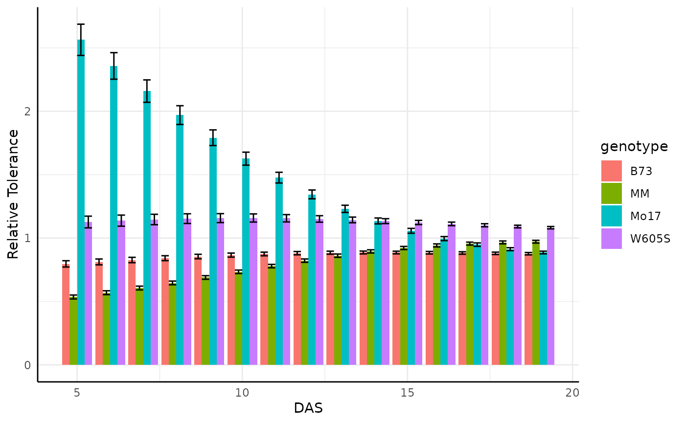
Cumulative Phenotypes
Sometimes we might want to use the cumulative difference over time.
cp <- cumulativePheno(sv_ag, phenotypes = c("area_cm2", "height_cm"),
group = c("genotype", "fertilizer", "barcode"), timeCol = "DAS")We can check that this worked correctly with trend lines:
ggplot(cp, aes(x = DAS, y = area_cm2_csum, color = genotype,
group = interaction(genotype, barcode))) +
facet_wrap(~ factor(fertilizer, levels = c("0", "50", "100"))) +
geom_line() +
pcv_theme() +
labs(
y = expression("Cumulative Sum of Area" ~ "(cm"^2 ~ ")"),
color = "Genotype"
)Note that for wide data this is just a wrapper around
cumsum, it is only a useful function if you are using
PlantCV datasets in wide and long but want to keep your R code
standard.
Longitudinal Modeling
Longitudinal modeling is the most comprehensive way to use the single
value traits from a bellwether experiment. Longitudinal modeling can
also be complicated compared to single timepoint analyses. Statistical
complications including changes in variance, non-linearity, and
autocorrelation present potential problems in analyses. To address these
we recommend using hierarchical models. pcvr attempts to
lower the barrier to entry for these models with helper functions for
use with brms, nlme, nlrq,
mgcv, and nls. Here we focus only on
brms models, but there are tutorials
that cover more options.
Growth Model Forms
Based on literature and observed trends there are 13 growth models
that pcvr supports. The six most common of those are shown
here using the growthSim function but the remaining options
could be visualized in the same way.
simdf <- growthSim("logistic",
n = 20, t = 25,
params = list("A" = c(200, 160), "B" = c(13, 11), "C" = c(3, 3.5))
)
l <- ggplot(simdf, aes(time, y, group = interaction(group, id))) +
geom_line(aes(color = group)) +
labs(title = "Logistic") +
theme_minimal() +
theme(legend.position = "none")
simdf <- growthSim("gompertz",
n = 20, t = 25,
params = list("A" = c(200, 160), "B" = c(13, 11), "C" = c(0.2, 0.25))
)
g <- ggplot(simdf, aes(time, y, group = interaction(group, id))) +
geom_line(aes(color = group)) +
labs(title = "Gompertz") +
theme_minimal() +
theme(legend.position = "none")
simdf <- growthSim("monomolecular",
n = 20, t = 25,
params = list("A" = c(200, 160), "B" = c(0.08, 0.1))
)
m <- ggplot(simdf, aes(time, y, group = interaction(group, id))) +
geom_line(aes(color = group)) +
labs(title = "Monomolecular") +
theme_minimal() +
theme(legend.position = "none")
simdf <- growthSim("exponential",
n = 20, t = 25,
params = list("A" = c(15, 20), "B" = c(0.095, 0.095))
)
e <- ggplot(simdf, aes(time, y, group = interaction(group, id))) +
geom_line(aes(color = group)) +
labs(title = "Exponential") +
theme_minimal() +
theme(legend.position = "none")
simdf <- growthSim("linear", n = 20, t = 25, params = list("A" = c(1.1, 0.95)))
ln <- ggplot(simdf, aes(time, y, group = interaction(group, id))) +
geom_line(aes(color = group)) +
labs(title = "Linear") +
theme_minimal() +
theme(legend.position = "none")
simdf <- growthSim("power law", n = 20, t = 25, params = list("A" = c(16, 11), "B" = c(0.75, 0.7)))
pl <- ggplot(simdf, aes(time, y, group = interaction(group, id))) +
geom_line(aes(color = group)) +
labs(title = "Power Law") +
theme_minimal() +
theme(legend.position = "none")
(l + g + m) / (e + ln + pl)Typically at least one of these models will be a good fit to your bellwether data, with gompertz models being the most broadly useful so far. In this experiment the plants were not germinated before being added to the machine, so we might not see asymptotic size. Still, conceptually we know that these plants will stop growing in the near future so we might use a gompertz model in place of the exponential model that looks most like our loess trendlines.
Model setup
Coding a multilevel Bayesian model can be a difficult and time
consuming process. Even with the greatly simplified syntax used by
brms this can present a barrier to entry for some people
who could benefit from using very robust models. To help get around this
potential issue for the specific case of measuring growth over time
pcvr includes several functions to work with
brms, the first of which is growthSS, a
self-starter helper function for use with brms::brm.
submodel options
For the purposes of this vignette we will only consider the default Student T model family, for examples of other model families (useful for count or circular data especially) see the Advanced Growth Modeling tutorial on github or the longitudinal growth vignette.
There are several ways to consider variance over time. By default
almost all modeling assumes homoscedasticity, that is constant variance
across predictor variables (time here). That assumption is very
unrealistic in biological settings since all seeds/seedlings will start
from a very low area but will grow differently through the experiment.
The growthSS function can use any of the main growth model
options as a model for distributional parameters (here being sigma).
Splines or asymptotic models will often yield the best fit to your
data’s variance.
Prior Distributions
An important part of Bayesian statistics is setting an appropriate prior. These represent your knowledge about the field and are used along with your collected data to yield results. Priors should generally be weak relative to your data, meaning that if your prior belief is wrong then your experiment can move the posterior distribution away from the prior in a meaningful way.
In growthSS priors can be specified as a brmsprior
object (in which case it is used as is), a named list (names
representing parameters), or a numeric vector, where values will be used
to generate lognormal priors with a long right tail. Lognormal priors
with long right tails are used because the values for our growth curves
are strictly positive and the lognormal distribution is easily
interpreted. The tail is a product of the variance, which is assumed to
be 0.25 for simplicity and to ensure priors are wide. This means that
only a location parameter needs to be provided. If a list is used then
each element of the list can be length 1 in which case each group will
use the same prior or it can be a vector of the same length as
unique(data$group) where group is your
grouping variable from the form argument to growthSS. If a
vector is used then a warning will be printed to check that the assumed
order of groups is correct. The growthSim function can be
useful in thinking about what a reasonable prior distribution might be,
although priors should not be picked by trying to get a great fit by eye
to your collected data.
We can check the priors made by growthSS with the
plotPrior function, which can take a list of priors or the
growthSS output.
priors <- list("A" = 130, "B" = 10, "C" = 0.2)
priorPlots <- plotPrior(priors)
priorPlots[[1]] / priorPlots[[2]] / priorPlots[[3]]Looking at the prior distributions this way is useful, but for those
still familiarizing with a given growth model the parameter values may
not be very intuitive. To help with picking reasonable priors while
familiarizing with the meaning of the model parameters the
plotPrior function can also simulate growth curves by
making draws from the specified prior distributions. Here is an example
of using plotPrior in this way to pick between possible
sets of prior distributions for a gompertz model. For asymptotic
distributions the prior on “A” is added to the y margin. For
distributions with an inflection point the prior on “B” is shown in the
x margin. Arbitrary numbers of priors can be compared in this manner,
but more than two or three can be cluttered so an iterative process is
recommended if you are learning about your growth model.
twoPriors <- list("A" = c(100, 130), "B" = c(6, 12), "C" = c(0.5, 0.25))
plotPrior(twoPriors, "gompertz", n = 100)[[1]]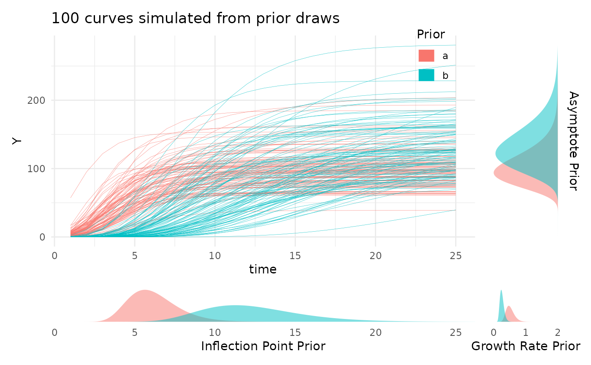
Using growthSS
Now we’re ready to define the necessary variables in our data and use
the growthSS function.
sv_ag$group <- interaction(sv_ag$fertilizer, sv_ag$genotype)The brms package is not always imported by
pcvr (since dependencies is NA by default when
installing from github), so before fitting models you may need to
install that package. For details on installing brms and
either rstan or cmdstanr (with
cmdstanr being recommended), see those packages linked
documentation. Note that if you install pcvr from github
with dependencies=T then cmdstanr and
brms will be installed and ready to use.
library(brms)
library(cmdstanr)
cmdstanr::install_cmdstan()Here our priors are informed by a general understanding of what we expect to see for a plant on the bellwether system. In general the example priors
ss <- growthSS(
model = "gompertz", form = area_cm2 ~ DAS | barcode / group, sigma = "spline", df = sv_ag,
start = list("A" = 130, "B" = 10, "C" = 0.5), type = "brms"
)Now we have most of our model components in the ss
object. Since we specified a gompertz model we have three parameters,
the asymptote (A), the inflection point (B),
and the growth rate (C). For other model options see
?pcvr::growthSim for details on the parameters.
Before trying to fit the model it is generally a good idea to check one last plot of the data and make sure you have everything defined correctly.
ggplot(sv_ag, aes(x = DAS, y = area_cm2, group = interaction(group, barcode),
color = group)) +
geom_line() +
theme_minimal() +
labs(
y = expression("Area" ~ "(cm"^2 ~ ")"),
color = "Genotype\nand Soil"
)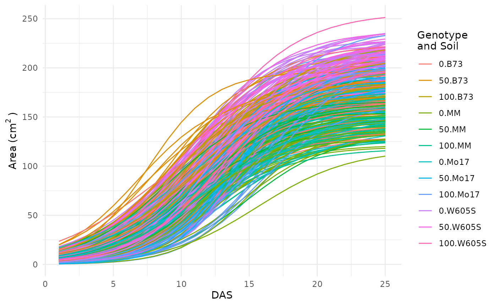
This looks okay, there are no strange jumps in the data or glaring problems.
Running Models
The fitGrowth function in this case will call
brms::brm which automatically uses the output from
growthSS. Any additional arguments to
brms::brm can still be specified, a few examples of which
are shown here.
Check Model Fit
We can visualize credible intervals from a brms model
and compare that to our growth trendlines to get an intuitive
understanding of how well the model fit. Note that since this vignette
does not load brms these are only a picture of the output from
growthPlot. The code is present to run this locally if you
have brms installed and choose to.
growthPlot(fit, form = area_cm2 ~ DAS | barcode / group, df = ss$df) +
labs(y = expression("Area" ~ "(cm"^2 ~ ")"))
Test Hypotheses
Now we probably have some ideas about what we want to test in our
data. The brms::hypothesis function offers incredible
flexibility to test all kinds of hypotheses. For consistency with other
backends the testGrowth function calls
brms::hypothesis to evaluate hypotheses. For some
comparisons pcvr has a helper function called
brmViolin to visualize posterior distributions and the
posterior probability of some hypotheses associated with them.
brmViolin(fit, ss, ".../A_group0.B73 > 1.05") +
ggplot2::theme(axis.text.x.bottom = ggplot2::element_text(angle = 90))This shows that we have a posterior probability greater than 99 percent of an asymptotic size at least 5 percent higher with the 100 type soil when compared against the 0 type soil. Note that this data does not have any plants that reached asymptotic size, so the model uses the incomplete data to estimate where an asymptote would be. In a normal experiment the plants would be more mature but here the asymptote parameter is artificially inflated for the 100 soil treatment group due to their slower growth rate.
There are a lot of options for how to use this function and even more
ways to use brms::hypothesis, so this example should not be
seen as the only way to compare your models.
Multi Value Traits
Working with multi value traits leads to different statistical challenges than the single value traits. Generally reading the data in as wide format makes for a significantly smaller object in memory terms since there are not lots of duplicated metadata (identifiers for each row when every image has hundreds of rows potentially). Note that for many questions even about color it is not necessary to use the entire color histograms. Make sure that you have a good reason to use the complete color data before going down this particular path for too long. As an example, a very simple comparison of the circular mean of Hue here will show our treatment effect in this data.
ggplot(sv_ag[sv_ag$DAS == 18, ], aes(
x = fertilizer, y = hue_circular_mean_degrees,
fill = as.character(fertilizer)
)) +
geom_boxplot(outlier.shape = NA) +
geom_jitter(width = 0.05, size = 0.5) +
scale_fill_manual(values = c(viridis::viridis(3, 1, 0.1)), breaks = c("0", "50", "100")) +
pcv_theme() +
theme(legend.position = "none") +
facet_wrap(~genotype, scales = "free_x") +
scale_x_discrete(limits = c("0", "50", "100")) +
labs(y = "Hue Circular Mean (degrees)", x = "Soil and Genotype")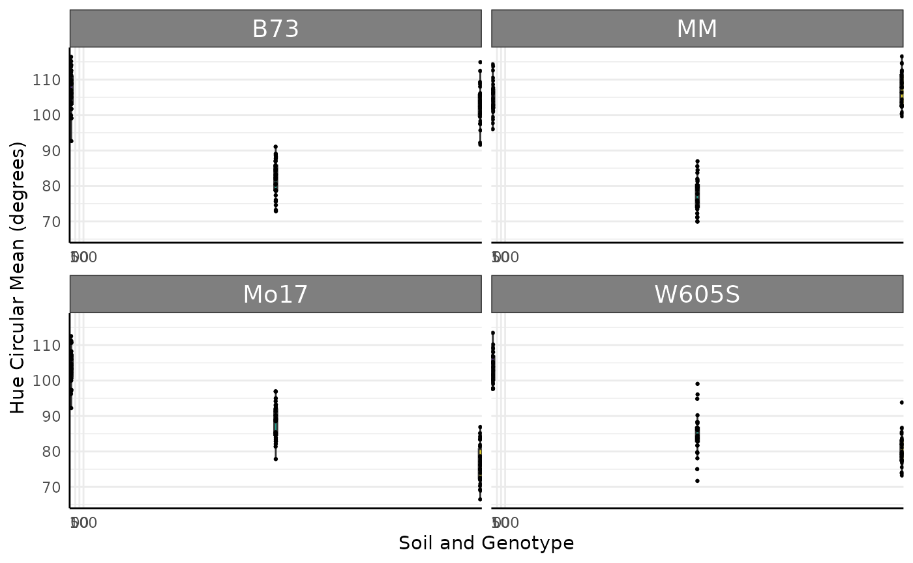
set.seed(123)
dists <- stats::setNames(lapply(runif(12, 50, 60), function(i) {
return(list(mean = i, sd = 15))
}), rep("rnorm", 12))
d <- mvSim(dists,
wide = TRUE, n_samples = 5,
t = 25, model = "linear",
params = list("A" = runif(12, 1, 3))
)
d$group <- sapply(sub(".*_", "", d$group), function(x) {
return(letters[as.numeric(x)])
})
d$genotype <- ifelse(d$group %in% letters[1:3], "MM",
ifelse(d$group %in% letters[4:6], "B73",
ifelse(d$group %in% letters[7:9], "Mo17", "W605S")
)
)
d$fertilizer <- ifelse(d$group %in% letters[seq(1, 12, 3)], 0,
ifelse(d$group %in% letters[seq(2, 12, 3)], 50, 100)
)
colnames(d)[1] <- "DAS"
colnames(d) <- gsub("sim_", "hue_frequencies_", colnames(d))
hue_wide <- dJoyplots
Joyplots are a common way to look at lots of distributions. Here we check the hue histograms as joyplots using three days and add a new fill for the hue colorspace. Joyplots can be made with long or wide multi-value traits.
p <- pcv.joyplot(hue_wide[hue_wide$DAS %in% c(5, 10, 15), ],
index = "hue_frequencies", group = c("fertilizer", "genotype"),
y = "DAS", id = NULL
)
p + scale_fill_gradientn(colors = scales::hue_pal(l = 65)(360)) +
scale_y_discrete(limits = c("5", "10", "15"))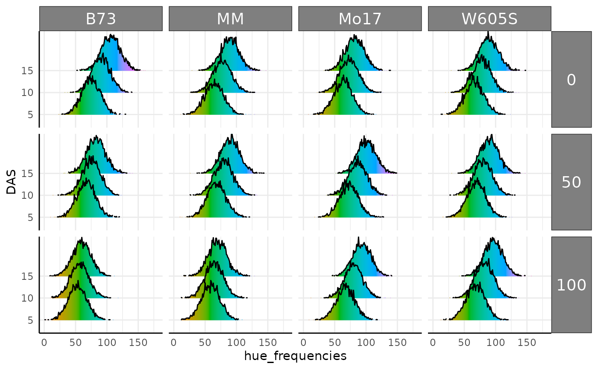
As mentioned previously the conjugate function can be
used with wide multi-value data. To use multi value data the samples
should be data frames or matrices representing color histograms. Here we
compare our color histograms assuming a lognormal distribution and find
that they are very similar in this parameterization.
mo17_sample <- hue_wide[
hue_wide$genotype == "Mo17" & hue_wide$DAS > 18 & hue_wide$fertilizer == 100,
grepl("hue_freq", colnames(hue_wide))
]
b73_sample <- hue_wide[
hue_wide$genotype == "B73" & hue_wide$DAS > 18 & hue_wide$fertilizer == 100,
grepl("hue_freq", colnames(hue_wide))
]
hue_res_ln <- conjugate(
s1 = mo17_sample, s2 = b73_sample, method = "lognormal",
rope_range = c(-10, 10), hypothesis = "equal"
)
hue_res_ln## Normal distributed Mu parameter of Lognormal distributed data.
##
## Sample 1 Prior Normal(mu = 0, sd = 10)
## Posterior Normal(mu = 4.578, sd = 0.474, lognormal_sigma = 0.135)
## Sample 2 Prior Normal(mu = 0, sd = 10)
## Posterior Normal(mu = 3.952, sd = 0.473, lognormal_sigma = 0.23)
##
## Posterior probability that S1 is equal to S2 = 50.847%
##
## Probability of the difference between Mu parameters being within [-10:10] using a % Credible Interval is 100% with an average difference of 0.628
##
##
## HDE_1 HDI_1_low HDI_1_high HDE_2 HDI_2_low HDI_2_high hyp post.prob
## 1 4.578306 3.820063 5.336548 3.951622 3.195338 4.707906 equal 0.5084671
## HDE_rope HDI_rope_low HDI_rope_high rope_prob
## 1 0.627561 -0.4515416 1.688398 1
plot(hue_res_ln)Ordination
Ordinations are another common way to look at multi value traits. The
pcadf function runs ordinations and optionally returns the
PCs with metadata. Here our simulated data does has a very deterministic
pattern due.
pcadf(hue_wide, cols = "hue_frequencies", color = "genotype", returnData = FALSE) +
facet_wrap(~ factor(fertilizer, levels = c("0", "50", "100")))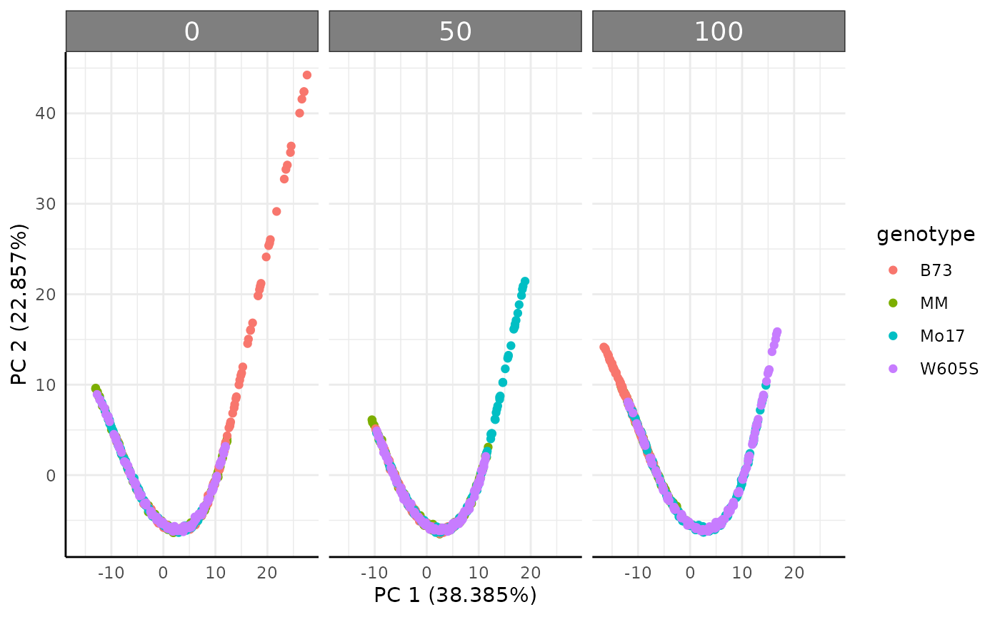
Earth Mover’s Distance
Since color data is exported from plantCV as histogram data we can also use Earth Mover’s Distance (EMD) to compare images. Conceptually EMD is a distance that quantifies how much work it would take to turn one histogram into another. Here we do pairwise comparisons of all our rows and return a long dataframe of those distances. Note that even running several cores in parallel this can take a lot of time for larger datasets since the number of comparisons quickly can become unwieldy. The output also will require more work to keep analyzing, so make sure this is what you want to be doing before using EMD to compare color histograms. If you are only interested in a change of the mean then this is probably not the best way to use your data.
Here is a fast example of a place where EMD makes a lot of sense. In
this simulated data we have five generating distributions. Normal, Log
Normal, Bimodal, Trimodal, and Uniform. We could use some gaussian
mixtures to characterize the multi-modal histograms but that will get
clunky for comparing to the unimodal or uniform distributions. The
conjugate function would not work here since these
distributions do not share a common parameterization. Instead, we can
use EMD.
set.seed(123)
simFreqs <- function(vec, group) {
s1 <- hist(vec, breaks = seq(1, 181, 1), plot = FALSE)$counts
s1d <- as.data.frame(cbind(data.frame(group), matrix(s1, nrow = 1)))
colnames(s1d) <- c("group", paste0("sim_", 1:180))
return(s1d)
}
sim_df <- rbind(
do.call(rbind, lapply(1:10, function(i) {
sf <- simFreqs(rnorm(200, 50, 10), group = "normal")
return(sf)
})),
do.call(rbind, lapply(1:10, function(i) {
sf <- simFreqs(rlnorm(200, log(30), 0.25), group = "lognormal")
return(sf)
})),
do.call(rbind, lapply(1:10, function(i) {
sf <- simFreqs(c(rlnorm(125, log(15), 0.25), rnorm(75, 75, 5)), group = "bimodal")
return(sf)
})),
do.call(rbind, lapply(1:10, function(i) {
sf <- simFreqs(c(rlnorm(100, log(15), 0.25), rnorm(50, 50, 5),
rnorm(50, 90, 5)), group = "trimodal")
return(sf)
})),
do.call(rbind, lapply(1:10, function(i) {
sf <- simFreqs(runif(200, 1, 180), group = "uniform")
return(sf)
}))
)
sim_df_long <- as.data.frame(data.table::melt(data.table::as.data.table(sim_df), id.vars = "group"))
sim_df_long$bin <- as.numeric(sub("sim_", "", sim_df_long$variable))
ggplot(sim_df_long, aes(x = bin, y = value, fill = group), alpha = 0.25) +
geom_col(position = "identity", show.legend = FALSE) +
pcv_theme() +
facet_wrap(~group)
Our plots show very different distributions, so we get EMD between our images and see that we do have some trends shown in the resulting heatmap.
sim_emd <- pcv.emd(
df = sim_df, cols = "sim_", reorder = c("group"),
mat = FALSE, plot = TRUE, parallel = 1, raiseError = TRUE
)## Estimated time of calculation is roughly 3.1 seconds using 1 cores in parallel.
sim_emd$plot
Now we can filter edge strength during our network building step for EMD > 0.5, and plot our network.
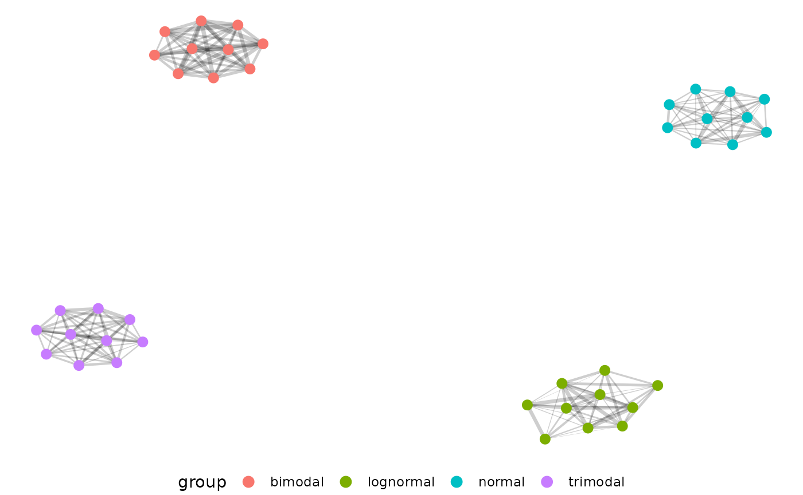
The distributions separate very well from each other, but we don’t
actually see our uniform distribution here. That is because the uniform
distribution does not have self-similar replicates and is also not very
similar to the other distributions. If we change our filtering then we
can even see which generating distributions are most similar to each
other. Here we pass 0.5 as a string, which tells pcv.net to
use the top 50 percent of EMD values instead of EMD values > 0.5.
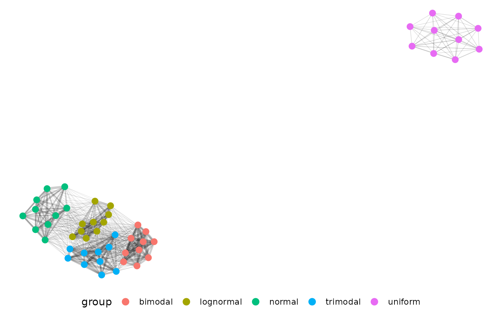
Just as we’d expect, our uniform distribution shows up now and is the
most different. Now changing the edgeFilter in the net.plot
function would let us fine tune this plot more to show finer
distinctions between our other four generating distributions.
Here is an example of how we might use hue data.
EMD <- pcv.emd(
df = hue_wide[hue_wide$DAS %in% c(5, 12, 19), ], cols = "hue_frequencies",
reorder = c("fertilizer", "genotype", "DAS"),
mat = FALSE, plot = TRUE, parallel = 12, raiseError = TRUE
)EMD can get very heavy with large datasets. For a recent lemnatech
dataset using only the images from every 5th day there were
= 40,094,224 pairwise EMD values. In long format that’s a 40 million row
dataframe, which is unwieldy. To get around this problem we might decide
to use the hue circular mean as a single value trait or to aggregate
some of our data with the mv_ag function.
Starting with our complete hue data we have 1500 image histograms.
The mv_ag function will take a group argument and randomly
pick members of that group to have their histograms combined. Note that
histograms are scaled to sum to 1 before they are sampled. Here we
return one example with 2 histograms kept per group and one example
where groups are summarized into 1 histogram. If there are equal or
fewer images as the n_per_group argument then no
aggregation is done for that group but data are rescaled.
hue_ag1 <- mv_ag(df = hue_wide, group = c("DAS", "genotype", "fertilizer"), n_per_group = 2)
dim(hue_ag1)## [1] 600 183
hue_ag2 <- mv_ag(hue_wide, group = c("DAS", "genotype", "fertilizer"), n_per_group = 1)
dim(hue_ag2)## [1] 300 183Network Analysis
As it stands our EMD data is potentially difficult to use for those unfamiliar with distance matrix based analysis. Here we represent our distances as a network to help use the results.
net.plot(net, fill = "DAS", shape = "fertilizer", size = 2)Our example network shows some clustering but real data’s patterns are likely to be more complex:
This is a much more complicated network! Parsing biological meaning out of this would require more work than the first example with 5 very different distributions, but there is a pretty strong cluster in the upper right corner of plants with low fertilizer at the end of the experiment. In general if you pick to use EMD with or without networks start small and consider what each step should mean conceptually for your experiment.
Conclusion
This vignette will be periodically updated as pcvr
changes. Generally the tutorials
are updated more frequently and can be a good resource. Once again if
your goal or experiment has some set of questions or needs that are not
met so far please consider making an issue on github to
help the Data Science Core continue to work on this project in ways that
will help the plantCV community.